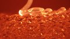

Neri Oxman
Neri Oxman | |
|---|---|
Oxman in 2017 | |
| Born | נרי אוקסמן February 6, 1976[1] Haifa, Israel |
| Nationality | Israeli, American |
| Alma mater | The Hebrew Reali School in Haifa, Israel Technion – Israel Institute of Technology (BA) Hebrew University of Jerusalem Architectural Association (MA) Massachusetts Institute of Technology (PhD) |
| Occupation | Associate professor of media arts and science[2] |
Notable work | Silk Pavilion (2013) Wanderers (2015) Material Ecology (2020) |
| Spouse(s) | Osvaldo Golijov (divorced) Bill Ackman (2019–present) |
| Children | 1 |
| Awards | Vilcek Prize, 2014 Earth Award, 2009 |
| Military career | |
| Allegiance | |
| Service/ | Israeli Air Force |
| Rank | First lieutenant |
Neri Oxman (Hebrew: נרי אוקסמן; born February 6, 1976) is an American–Israeli designer and professor at the MIT Media Lab, where she leads the Mediated Matter research group. She is known for art and architecture that combine design, biology, computing, and materials engineering.
Her work embodies environmental design and digital morphogenesis, with shapes and properties that are determined by their context. She coined the phrase "material ecology" to define her work, placing materials in context.[3][4] Stylistic trademarks include brightly colored and textured surfaces with structure at many scales, and composite materials whose hardness, color, and shape vary over an object. The results are often designed to be worn or touched, and inspired by nature and biology.
Many of Oxman's projects use 3D printing and fabrication techniques. They include the Silk Pavilion, spun by silkworms released onto a nylon frame,[5] Ocean Pavilion, a water-based fabrication platform that built structures out of chitosan,[6] Glass I,[7] the first 3D printer for optically transparent glass and a set of glasswork produced by it,[8] and collections of 3D-printed clothing and wearables worn in couture shows and performances.[9]
She has held exhibitions at the Museum of Modern Art and Boston's Museum of Science, which have some of her works in their permanent collections, including SFMOMA.[10] MoMA curator Paola Antonelli called her "a person ahead of her time, not of her time",[11] and Bruce Sterling called her work "shatteringly different from anything before".[12]
Early life and education[edit]
Oxman was born and raised in Haifa, Israel, to a Jewish family.[13][14] Her parents, Robert and Rivka Oxman, are both architects. Her younger sister, Keren Oxman, is an artist. Oxman graduated from the Hebrew Reali School in Haifa in 1994. Oxman grew up "between nature and culture", spending time in her grandmother's garden and her parent's architectural studio.
As with most Israeli youth, Oxman served in the armed forces, enlisting in the Israeli Air Force, achieving the rank of first lieutenant.[15] After her service, she moved to Jerusalem to enter Hebrew University's Hadassah Medical School. After two years, she switched to studying architecture at the Technion – Israel Institute of Technology, and then at the London Architectural Association School of Architecture, graduating in 2004.[16][17]
In 2005, she moved to Boston to join the architecture PhD program at MIT, under adviser William J. Mitchell. Her thesis was on material-aware design.[18] In 2010, she became an associate professor at MIT in the MIT Media Lab as the Sony Corporation Career Development Professor (so named as the position is funded with a grant from Sony).
Personal life[edit]
Oxman was previously married to Argentine composer Osvaldo Golijov.[11] She married American investor and hedge fund manager Bill Ackman in January 2019.[19] Oxman and Ackman have a daughter,[20] Raika.[21]
Career[edit]
Oxman's work has been displayed around the world, with pieces in the permanent collections of the Museum of Modern Art, the Cooper Hewitt Design Museum, the Centre Georges Pompidou, Vienna's Museum of Applied Arts, SFMOMA, and Boston's Museum of Fine Arts and Museum of Science.[22] Exhibits have also been shown at the Smithsonian, and the Beijing International Art Biennale and in 2020 a major retrospective of Oxman's work opened at the Museum of Modern Art.[23][24]
She published papers on parametric and contextual design, and developed specific engineering techniques to realize those designs in various materials. In 2006, she launched an interdisciplinary research project at MIT called materialecology, to experiment with generative design.[25][26] This project and related collaborations informed her early art. She has promoted the idea of finding new ways to communicate about and collaborate on design. In 2016, she helped launch the open multidisciplinary Journal of Design Science.[27]
She has appeared on the covers of Fast Company,[28] Wired UK,[29] ICON,[30] and Surface magazine.[31] Her work is mentioned as an inspiration for changing how materials and structures are designed, and her artistic works were described by Andrew Bolton as "otherworldly—defined by neither time nor place".[32]
On becoming a professor in 2010, Oxman founded the Mediated Matter research group at the MIT Media Lab. There she expanded her collaborations into biology, medicine and wearables.
In 2019, it was revealed that her lab received $125,000 from financier and convicted sex offender Jeffrey Epstein through the MIT Media Lab and its director Joi Ito. She directed her students in the lab to send Epstein a gift despite the concerns about Epstein they brought to her attention.[33]
Design philosophy[edit]
Oxman writes about the world and environment as organisms, changing regularly and responding to use, full of gradients of color and physical properties rather than sharp boundaries. She proposed developing a material ecology with "holistic products, characterized by property gradients and multi-functionality" – in contrast to assembly lines and “a world made of parts". On the interplay between design and fabrication methods, she said "the assumption that parts are made from single materials and fulfill predetermined functions is deeply rooted in design... [and] enforced by the way that industrial supply chains work.”[34]
She describes her work as pursuing "a shift from consuming nature as a geological resource to editing it as a biological one."[35][36] This leads to using multi-scale biological shapes and textures for inspiration, and including living elements in fabrication processes, such as the glowing bacteria in Mushtari and using silkworms to construct the Silk Pavilion.[5] She has written that science, engineering, design and art should be more actively connected – with the output of each discipline serving as input for another.[37]
Oxman has given presentations on digital and cross-disciplinary design, and on moving beyond mass-produced design elements. These included a presentation on form generation and environmental design,[38] cited by rapid prototypers in other fields,[39] and a popular TED talk on designing "at the intersection of technology and biology".[34] Her 2016 keynote at the American Institute of Architects conference proposed "a more profound role for architecture in society", by working hand-in-hand with science and engineering.[40]
Oxman has used raycounting in her work, a technique that is the opposite of photo sculpting. In raycounting a flat surface is conversed into a highly curved one through a specific layout of light parameters. An algorithm calculates the intensity, position, and direction of one or multiple light sources placed in a given environment and assigns local curvature values to the relation between geometry and light performance. Then produced by stereolithography, the three double layered, translucent objects show resin pockets wherever these surfaces intersected.[41]
Television appearances[edit]
Oxman is the focus of an episode of Netflix docu-series Abstract: The Art of Design (season 2, episode 2).[42]
Mediated Matter[edit]
The Mediated Matter group uses computational design, digital fabrication, materials science and synthetic biology to explore design possibilities in small and large structures.[22][35] This sometimes involved taking images of a biological sample, developing algorithms to produce similar structures, and developing new manufacturing processes to realize the results. Projects have included wearables inspired by current and future environments,[43] solar-powered and biodegradable designs,[44] new artistic techniques, and experimental surfaces, walls, coverings and load-bearing elements. Some of these involved combining work from many fields.
Organic and natural fabrication[edit]
A number of Oxman's works have involved fabrication by animals or by natural processes.
The Silk Pavilion, an installation designed in 2013, was noted for its fabrication method as much as its final form. It was woven by 6,500 free-ranging silkworms on a nylon-frame dome.[45] Experiments with the silkworms identified how they would respond to different surfaces, and what would encourage them to spin onto an existing structure rather than spinning a cocoon. The frame of a large polyhedral dome was loosely woven by a robotic arm out of thin nylon threads, and suspended in an open room.[46] The dome was designed with gaps where it would be warmest. Silkworms were released onto the frame in waves, where they added layers of silk before being removed. This involved engineering, sericulture, and modelling sun in the room. The resulting installation art was hung so that people could stand inside it.
The Ocean Pavilion, an installation from 2014, included a water-based fabrication platform where structures were built out of chitosan, a water-soluble organic fiber similar to chitin. Structural pillars and long delicate leaves were made by varying how the fibers were deposited. The result was a combination of hard and soft structures, changing from solid to willowy over the length of a branch or leaf, but all made from the same base material.[6]
The Synthetic Apiary, a room-sized installation built in 2015, studied the behavior of bees in an entirely indoor environment, including how they built hives in and around different structures. This was developed in collaboration with a beekeeping company, as a way of testing possible responses to colony loss, and exploring how biological niches could be explicitly integrated into buildings.[47]
3D printing developments[edit]
Mediated Matter worked extensively with various 3D printing techniques, developing their own methods and collaborating with printing companies such as Stratasys. Projects have ranged in scale from enclosures and large furniture, to artwork and clothes, to biocomposites, artificial valves, and DNA assembly. The group designed a prototype printer with a robotic arm that could build 8-foot tall structures all around itself in outdoor spaces, and a quick-curing printer that makes free-standing objects without support structures.[48]
In 2012, Oxman printed her first set of body-sized wearables, a collection titled Imaginary Beings and inspired by legendary creatures. This was followed by Anthozoa, a dress developed in collaboration with fashion designer Iris van Herpen and materials engineer Craig Carter. These were some of the first examples of multi-color and multi-material 3D printing a human scale,[49] using a bright palette with fine granular control of color and texture. In 2015, she designed the Wanderers collection with Christoph Bader and Dominik Kolb, inspired by ideas of interplanetary exploration. That earned Fast Company's award for Design Innovation. The most influential of the Wanderers was the Living Mushtari chestpiece, a model digestive tract filled with liquid and a colony of photosynthetic bacteria and E. coli.[50] Producing Mushtari required new modeling methods for printing long flexible tubes with varying thickness.
In 2016, she produced Rottlace, a set of 3D-printed feathered, filamented, and textured masks. These were made for the artist Björk,[51] based on a 3D scan of her face. Björk wore these in the world's first 360° VR performance.[9][52] She also began designing Vespers, a collection of 15 death masks. Described as "like something out of Alien", each mask is a curved translucent shell the size of a face, within which a detailed pattern is printed in clouds of color and shadow. This tested the limits of how small voxels of color could be inside a 3D printed solid.[53][54]
Oxman has also premiered new printing tools and processes. In 2015, she designed Gemini, a large chaise longue combining a milled wood shell with a 3D-printed surface. Both the outer shell and the texture of the inner surface were designed to produce a soothing acoustical environment for someone reclining in it. Gemini was later acquired by SF MoMA.[55]
In 2014, a Mediated Matter team developed G3DP,[56] also known as Glass I,[57] the first 3D printer for optically transparent glass.[58][59] At the time, sintering 3D printers could print with glass powder, but the results were brittle and opaque.[60] G3DP was designed in collaboration with MIT's Glass Lab and the Wyss Institute, emulating traditional glass working processes. Molten glass was poured in fine streams and cooled in an annealing chamber, yielding precision suitable for art and consumer products, and glass strength suitable for architectural elements.[61] The process allowed close control of color, transparency, thickness and texture.[62] Changing the height and speed of the nozzle produced uniform loops, turning the printer into a "molden glass sewing machine".[63] A set of glass vessels made with this printer went on exhibit at the Cooper Hewitt and other museums,[64] and a 10-foot tall sculpture of light and printed glass, YET, was designed for the 2017 Milan Design Week.[65]
Publications and essays[edit]
- 2016: What if our buildings were grown, not built?[35]
- 2014: Material Ecology[66]
- 2014: Gemini: Multi-Material Digital Design Fabrication[67]
- 2011: Variable Property Rapid Prototyping[68]
- 2006: Tropisms: Computing Theoretical Morphospaces of Branching Growth Systems[69]
Group publications
Exhibited works[edit]
Oxman's early projects took the form of example surfaces, furniture, or objects that could be worn or put on display. Most were exhibited in museums. More recent work included temporary and interactive installations. Some, such as the Ocean Pavilion and Glass I, included a production process;[61] others, such as the Silk Pavilion and Synthetic Apiary, included biological observation and research on the exhibit.[47]
Selected works[edit]
- Cartesian Wax, Monocoque, Subterrain[74] (2007, MoMA)[75]
- Raycounting, Penumbra (2007, MoMA)
- Fibonacci’s Mashrabiya (2009, 12, Centre Pompidou)
- Beast: Prototype for a Chaise Longue (2010, MoS)
- Carpal Skin[76] (2010, Museum of Science)
- Silk Pavilion (2013), installation
- Imaginary Beings (2012, Centre Pompidou)
- 18 'wearables for demigods': Gravida, Pneuma, Remora
- Ocean Pavilion (2014), installation
- Anthozoa (2013, MFA), couture dress
- Gemini (2015, SF MoMA), acoustical chaise
- Wanderers collection (2015):[77]
- Otaared, Qamar, Zuhai
- Living Mushtari
- Glass I (2014), 3D printer & glasswork [78]
- Synthetic Apiary (2015), installation[79]
- Rottlace (2016, Björk), masks[9]
- Vespers (2016–2018), death mask series[54]
Gallery[edit]
- Art, surfaces, and furniture
Cartesian Wax surface
Raycounting, multiply lit

Pneuma 2

- Wearables, machines, and installations
Anthozoa dress
- Play media
G3DP printing process
2d gen G3DP
Silk Pavilion process
Synthetic Apiary studies
Mushtari living corset
Family of morphologies used for Wanderers
Vespers death masks

{kind=link}
{kind=link}
{kind=link}
{kind=link}
{kind=link}
{kind=link}
{kind=link}
{kind=link}
{kind=link}
{kind=link}
{kind=link}
Selected exhibits[edit]
- Beijing Art Biennale: 2006–2010
- MoMA, New York: 2007, 2010 (Action: Design over Time), 2015 (This Is for Everyone), 2020 ( "Neri Oxman: Material Ecology" )
- Museum of Science, Boston: 2012 (Neri Oxman: At the Frontier of Ecological Design[80])
- Cooper Hewitt Museum: 2015 (Making Design), 2016 (Beauty)
- Centre Pompidou, Paris: 2012 (Imaginary Beings exhibit, Multiversités Créatives[81])
- Science Museum, London: 2012 & 2013 (3D PRINT SHOW[82])
- Museum of Fine Arts, Boston: 2013, 2016 (#techstyle: Production[83])
- Museum of Applied Arts, Vienna: 2014 (150 Years of the MAK[84])
- National Gallery of Victoria, Victoria: 2017 (NGV Triennial[85])
Awards and recognition[edit]
Oxman is a senior fellow in the Design Futures Council, and won the Vilcek Prize in Design in 2014.[86]
In 2009, she was on ICON’s list of the “20 Most Influential Architects to Shape Our Future.”[87] In 2012, Shalom Life ranked her number 1 on its list of “most talented, intelligent, funny, and gorgeous Jewish women in the world."[13][14]
Other awards include:
- London Design Festival Design Innovation medal (2018)[2]
- MIT Collier Medal (2016)[88]
- Cultural Leader, World Economic Forum (2016)[89]
- Innovation by Design Award, Fast Company (2015), for Wanderers[90]
- American Institute of Architects Women in Design (2014)[91]
- Carnegie "Pride of America" Award (2014)[92]
- Vilcek Prize in Design (2014)[86]
- Senior Fellow, Design Futures Council (2013)[93]
- Earth Award for Future Crucial Design (2009)[94]
- Carter Manny Citation, Graham Foundation for the Arts (2008)
- Holcim Foundation Next Generation Award (2008), for "microstructure research for building skins"[95]
References[edit]
- ^ Antonelli, Paula (January 1, 2008). Design and the elastic mind. NY, NY: Museum of Modern Art. p. 75. ISBN 9780870707322. OCLC 780473124.
- ^ Hill, David J. (June 4, 2012). "3D Printing Is The Future Of Manufacturing And Neri Oxman Shows How Beautiful It Can Be". singularityhub.com. Retrieved June 4, 2012.
- ^ "Material Ecology website". Retrieved October 15, 2011.
- ^ "Material Ecology". The Dirt. August 20, 2009. Archived from the original on July 18, 2011. Retrieved April 25, 2011.
- ^ Jump up to: a b Silkworms and Robot work together to weave silk pavilion, Dezeen, June 3, 2013.
- ^ Jump up to: a b Mogas-Soldevila, Laia; Duro-Royo, Jorge; Lizardo, Daniel; Kayser, Markus; Patrick, William; Sharma, Sunanda; Keating, Steven; Klein, John; Inamura, Chikara; Oxman, Neri (2015). "DESIGNING THE OCEAN PAVILION: Biomaterial Templating of Structural, Manufacturing, and Environmental Performance" (PDF). Proceedings of the International Association for Shell and Spatial Structures (IASS) Symposium. Retrieved September 16, 2016.
- ^ "Glass I". Mediated Matter Group. Archived from the original on July 7, 2020.
- ^ The G3DP Environment Archived August 5, 2018, at the Wayback Machine, from the Mediated Matter Lab.
- ^ Jump up to: a b c "Björk to perform the world's first 360 VR stream – Dancing Astronaut". Dancing Astronaut. June 28, 2016. Retrieved August 2, 2016.
- ^ "SFMOMA Collection". SFMOMA.
- ^ Jump up to: a b "Neri Oxman Is Redesigning the Natural World". Surface Magazine. June 6, 2016. Retrieved July 8, 2016.
- ^ Sterling, Bruce (May 1, 2008). "Neri Oxman weaves nature's logic into design and makes buildings, architects, and Bruce Sterling sweat". ABITARE Magazine.
- ^ Jump up to: a b Ashley Baylen (April 12, 2012). "Top 50 Hottest Jewish Women (10–1) – Page2". Shalom Life. Archived from the original on January 7, 2016. Retrieved May 2, 2013.
- ^ Jump up to: a b "Who the Hell Is Your New Wonder Woman?". December 4, 2013. Retrieved September 19, 2016.
- ^ Langmuir, Molly (August 9, 2019). ""Neri Oxman has all the answers"". MIT Media Lab via ELLE. Archived from the original on January 3, 2020.
- ^ "Neri Oxman Official Website". Archived from the original on June 22, 2020.
- ^ Her master's thesis was on using "structural, spatial and environmental" cues to drive shape generation. Oxman, Neri (2004). Performative Morphologies.http://neri.media.mit.edu/assets/pdf/Publications_VH.pdf
- ^ Material-based design computation, Neri Oxman, 2010. DSpace@MIT.
- ^ Mallozzi, Vincent (January 19, 2019). "As If by Design, Their Connection Was Inevitable". Retrieved September 14, 2020.
- ^ "Neri Oxman: the architect of tomorrow". Financial Times. February 28, 2020. Retrieved September 14, 2020.
- ^ Bailey, Spencer. "Episode 16 | Neri Oxman on Her Extraordinary Visions for the "Biological Age"". TimeSensitive.fm. Retrieved September 14, 2020.
- ^ Jump up to: a b "Mediated Matter group website". MIT Media Lab. Retrieved June 15, 2016.
- ^ Oxman, Neri (July 8, 2010). "Structuring Materiality: Design Fabrication of Heterogeneous Materials". Architectural Design. 80 (4): 78–85. doi:10.1002/ad.1110.
- ^ Roux, Caroline (February 28, 2020). "Neri Oxman: the architect of tomorrow". Financial Times.
- ^ Material Ecology blog, 2006–2013.
- ^ Oxman, Neri. "Material Ecology projects Neri Oxman".
- ^ MIT Media Lab's Journal of Design Science, Liz Stinson, WIRED. March 10, 2016.
- ^ "Most Creative People of 2009". Fast Company. 2010.
- ^ "The Team at Wired are 3D Printing Obsessed". Retrieved August 2, 2016.
- ^ O'Neal, Paul. "Neri Oxman on 3D Printing – Icon Magazine". www.iconeye.com. Retrieved August 2, 2016.
- ^ "NO. 129 JUNE/JULY 2016". SURFACE. Retrieved February 20, 2017.
- ^ Sullivan, Robert. “Future Perfect”, in VOGUE, Met Gala Special Edition, June 2016, pp. 44–45.
- ^ "A meeting with Jeffrey Epstein led to a gift — and, now, regrets - The Boston Globe". BostonGlobe.com. Retrieved September 14, 2019.
- ^ Jump up to: a b Design at the Intersection of Technology and Biology, 2015.
- ^ Jump up to: a b c Neri Oxman. "What if our buildings were grown, not built?". World Economic Forum. Retrieved July 10, 2016.
- ^ Oxman, Neri (December 7, 2012). "Five Tenets of a New Kind of Architecture". CNN.
- ^ The Age of Entangelement, Neri Oxman, Journal of Design and Science. January 13, 2016.
- ^ On Designing Form, PopTech 2009.
- ^ Bibb, Richard (2015). Medical Modelling: The Application of Advanced Design and Rapid Prototyping Techniques in Medicine. Woodhead Publishing. pp. 313, 332. ISBN 9781782423003.
- ^ "Perspectives on BEST of SHOW 2016", Architosh, June 3, 2016. The talk proposed "a more profound role for the architecture field in society", and received a standing ovation.
- ^ Sterling, Bruce. “Natural’ 3-D Objects.” Abitare, Edited by Anniina Koivu , no. 482, May 2008, pp. 134–137.
- ^ "Neri Oxman and Olafur Eliasson feature in second series of Netflix design documentary". Dezeen. September 20, 2019. Retrieved October 8, 2019.
- ^ Design Fiction: Neri Oxman, “Imaginary Beings: Mythologies of the Not Yet”, Wired magazine. May 12, 2012.
- ^ “Mushtari” Is a 3D Printed Wearable That Makes Products from Sunlight, ArchDaily. July 12, 2015.
- ^ Oxman, Neri; Laucks, Jared; Kayser, Markus; et al. "Silk Pavilion: A case study in fibre-based digital fabrication" (PDF). Fabricate: Negotiating Design and Making. gta Verlag. pp. 249–255.
- ^ Dvorsky, George. "Thousands of silkworms and one robot made this intricate sculpture". io9. Retrieved March 19, 2017.
- ^ Jump up to: a b "Neri Oxman + Mediated Matter Create Synthetic Apiary to Combat Honeybee Colony Loss". ArchDaily. October 5, 2016. Retrieved July 10, 2016.
- ^ "Freeform 3D Printing: Towards a Sustainable Approach to Additive Manufacturing". 2013. Archived from the original on March 2, 2017. Retrieved March 1, 2017.
- ^ "The not-so-secret Objet multi-color 3D printer". 3D Printer. May 7, 2012. Retrieved February 28, 2017.
- ^ "MIT professor creates 3D printed 'wearable skin' for space exploration". December 3, 2014. Retrieved August 7, 2016.
- ^ From "Roðlaus", Icelandic for "skinless".
- ^ "Making of Björk Digital" (in Japanese). Archived from the original on April 23, 2017. Retrieved February 28, 2017.
- ^ "Haunting 3D-printed death masks are like something out of Alien". WIRED UK. Retrieved March 10, 2017.
- ^ Jump up to: a b "Vespers, the Latest Mask Collection by MIT's Neri Oxman". Architect. December 15, 2016. Retrieved March 10, 2017.
- ^ "Neri Oxman Further Pursues 3D Printing with Multi-Materials for her Latest Mythical Installation — "GEMINI"". Retrieved August 10, 2016.
- ^ Klein, John (2015). Additive Manufacturing of Optically Transparent Glass. Mediated Matter.
- ^ "Glass I (G3DP)". Kayser Works. Archived from the original on July 9, 2020.
- ^ Chandler, David (September 14, 2015). "Printing transparent glass in 3-D". MIT News. Retrieved July 9, 2016.
- ^ Dorrier, Jason (September 9, 2015). "Watch MIT's Breakthrough 3D Printer Pour Molten Glass Like Honey". Singularity Hub. Singularity University. Retrieved August 1, 2016.
- ^ joris (April 14, 2010). "you can now 3D print in glass with Shapeways". The Shapeways Blog. Retrieved March 19, 2017.
- ^ Jump up to: a b Peach, Matthew (September 1, 2015). "US group develops 3D-printing technique for optical glass". optics.org. SPIE. Retrieved August 12, 2016.
- ^ "MIT's Neri Oxman on the True Beauty of 3D Printed Glass". August 28, 2015. Retrieved August 12, 2016.
- ^ Webb, Jonathan (January 1, 2016). "'Sewing' with molten glass and maths". BBC News. Retrieved March 19, 2017.
- ^ "Cooper Hewitt Design Triennial, Beauty". Cooper Hewitt. July 2016.
- ^ Manon, Victoria (February 17, 2017). "L'exposition " Lexus Yet " à la Milan Design Week en collaboration avec Neri Oxman | Linformatique.org". Linformatique.org (in French). Archived from the original on February 17, 2017. Retrieved February 28, 2017.
- ^ Oxman, Neri; Ortiz, Christine; Gramazio, Fabio; Kohler, Matthias (March 1, 2015). "Material ecology". Computer-Aided Design. Material Ecology. 60: 1–2. doi:10.1016/j.cad.2014.05.009. hdl:1721.1/107168.
- ^ Oxman, Neri; Dikovsky, Daniel; Belocon, Boris; Carter, W. Craig (September 1, 2014). "Gemini: Engaging Experiential and Feature Scales Through Multimaterial Digital Design and Hybrid Additive–Subtractive Fabrication". 3D Printing and Additive Manufacturing. 1 (3): 108–114. doi:10.1089/3dp.2014.1505. hdl:1721.1/108169. ISSN 2329-7662.
- ^ Oxman, Neri (March 1, 2011). "Variable property rapid prototyping". Virtual and Physical Prototyping. 6 (1): 3–31. doi:10.1080/17452759.2011.558588. ISSN 1745-2759.
- ^ Oxman, Neri (2006). "Collective Intelligence in Design, pg 20". AD (Architectural Design). 76 (5).
- ^ Keating, Steven J.; Gariboldi, Maria Isabella; Patrick, William G.; Sharma, Sunanda; Kong, David S.; Oxman, Neri (August 15, 2016). "3D Printed Multimaterial Microfluidic Valve". PLoS ONE. 11 (8): e0160624. Bibcode:2016PLoSO..1160624K. doi:10.1371/journal.pone.0160624. ISSN 1932-6203. PMC 4985141. PMID 27525809.
- ^ Patrick, William G.; Nielsen, Alec A. K.; Keating, Steven J.; Levy, Taylor J.; Wang, Che-Wei; Rivera, Jaime J.; Mondragón-Palomino, Octavio; Carr, Peter A.; Voigt, Christopher A.; Oxman, Neri; Kong, David S. (December 30, 2015). "DNA Assembly in 3D Printed Fluidics". PLoS ONE. 10 (12): e0143636. Bibcode:2015PLoSO..1043636P. doi:10.1371/journal.pone.0143636. ISSN 1932-6203. PMC 4699221. PMID 26716448.
- ^ Duro-Royo, Jorge; Mogas-Soldevila, Laia; Oxman, Neri (December 1, 2015). "Flow-based fabrication: An integrated computational workflow for design and digital additive manufacturing of multifunctional heterogeneously structured objects". Computer-Aided Design. 69: 143–154. doi:10.1016/j.cad.2015.05.005. hdl:1721.1/112152.
- ^ Klein, John; Stern, Michael; Franchin, Giorgia; Kayser, Markus; Inamura, Chikara; Dave, Shreya; Weaver, James C.; Houk, Peter; Colombo, Paolo; Yang, Maria; Oxman, Neri (August 19, 2015). "Additive Manufacturing of Optically Transparent Glass". 3D Printing and Additive Manufacturing. 2 (3): 92–105. doi:10.1089/3dp.2015.0021. hdl:1721.1/101831. ISSN 2329-7662.
- ^ Variable Property Analysis and Fabrication of a Butterfly Wing
- ^ "Project list". Personal site. MIT Media Lab. Retrieved June 1, 2016.
- ^ Prototype for a Carpal Tunnel Syndrome Splint
- ^ Wearable skins, Sarah Anderson Goehrke. 3DPrint.com, November 25, 2014.
- ^ [1]
- ^ Synthetic apiary Archived August 17, 2018, at the Wayback Machine: a perpetual spring environment. Retrieved September 15, 2016.
- ^ "Neri Oxman: At the Frontier of Ecological Design" (PDF). Museum of Science, Boston. Fall 2009. Retrieved July 1, 2016.
- ^ Imaginary Beings: Mythologies of the Not Yet, Wired, May 2012.
- ^ 3-D printing produces a fresh creative outlet for artists, L.J. Williamson, LA Times. March 10, 2013.
- ^ What is the future of fashion?, Joe Incollingo, Boston Globe. March 7, 2016.
- ^ Remora – EXEMPLARY: 150 YEARS OF THE MAK, MAK Blog. July 8, 2014.
- ^ The NGV announces its biggest installation of the year Archived October 3, 2017, at the Wayback Machine, Angelica Xidias. Vogue Magazine, March 8, 2017.
- ^ Jump up to: a b "Media Lab's Neri Oxman awarded Vilcek Prize". MIT News. Retrieved November 11, 2015.
- ^ "Architect, Designer Neri Oxman Uses Principles of Nature to Create, Build". Targeted News Service. November 3, 2010.
- ^ "2016 Collier Medal | Neri Oxman". hrweb.mit.edu. Retrieved March 23, 2017.
- ^ "Arts and Culture at Davos 2016". widgets.weforum.org. Retrieved March 23, 2017.
- ^ "Neri Oxman and SOM Among Fast Company's Innovation By Design Award Winners". September 18, 2015. Retrieved July 2, 2016.
- ^ AIA Women in Design award winners Archived August 15, 2016, at the Wayback Machine, 2014.
- ^ Pride of America Honorees Archived August 15, 2016, at the Wayback Machine page
- ^ "Senior Fellows - Design Futures Council". Design Futures Council. Archived from the original on March 24, 2017. Retrieved March 23, 2017.
- ^ Neri Oxman named winner of first Earth Award, Bustler, January 13, 2009.
- ^ "Top sustainable construction projects in North America honored", Holcim Foundation
External links[edit]
| Wikimedia Commons has media related to Neri Oxman. |
- Official site
- Neri Oxman on Instagram
{kind=link}
- Israeli architects
- Israeli designers
- Israeli expatriates in the United States
- Israeli Jews
- Living people
- Hebrew Reali School alumni
- MIT School of Architecture and Planning alumni
- Massachusetts Institute of Technology faculty
- Technion – Israel Institute of Technology alumni
- 1976 births
- People from Haifa
- MIT Media Lab people